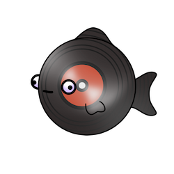
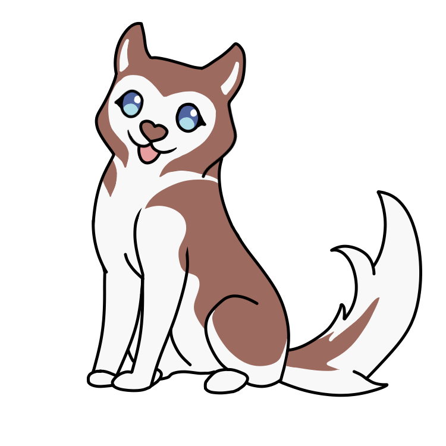

Technische interacties
Kleine simpele experimenten die het (merendeels) doen.
Kleine simpele experimenten die het (merendeels) doen.
...
...
Placeholder

>Wachten op input... 0:00 : 0:00Verouderd marquee element, maar zeer entertaining.
hex #xxxxxx
rgb(x, x, x)
Krijg een random getal tussen 1 en 20.
In het Copper/Ahtna chapter in Alaska laat deltakarakter Tagha aan Rosie de Iditarod Trail Hondenslede Race zien.
- Druk op de hond om de interactie te beginnen!
- Maak een aaibeweging over de hond met de muis :D
